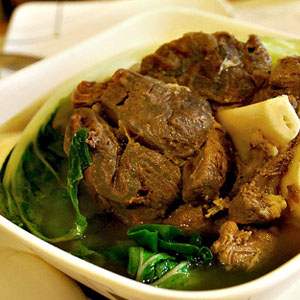
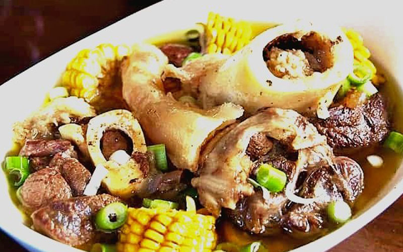

Local Dishes Recipe 1:
Beef Bulalo
- Dish Description:
- A beef soup comprised of shank with bone marrow still inside the bone, Bulalo is considered to be one of the most favorite main dishes in the Philippines. Because of the popularity of this Filipino food, restaurants and eateries specializing in cooking Bulalo were put-up.Some of the famous “Bulalohan” can be found in Tagaytay City (Cavite) and Sto. Tomas (Batangas). Commercial restaurants also include Bulalo in their menu.

Ingredients:
- 2 lbs beef shank
- 1/2 pc small cabbage whole leaf individually detached
- 1 small bundle Pechay
- 3pcs Corn each cut into 3 parts
- 2 tbsp Whole pepper corn
- 1/2 cup Green onions
- 1 medium sized onion
- 34 ounces water
- 2 tbsp fish sauce optional
Directions:
- In a big cooking pot, pour in water and bring to a boil.
- Put-in the beef shank followed by the onion and whole pepper corn then simmer for 1.5 hours (30 mins if using a pressure cooker) or until meat is tender.
- Add the corn and simmer for another 10 minutes.
- Add the fish sauce,cabbage, pechay, and green onion (onion leeks).
- Serve hot. Share and Enjoy!